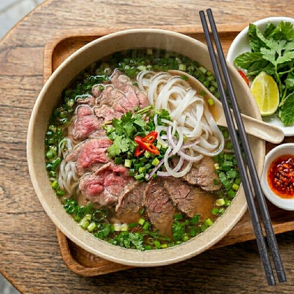
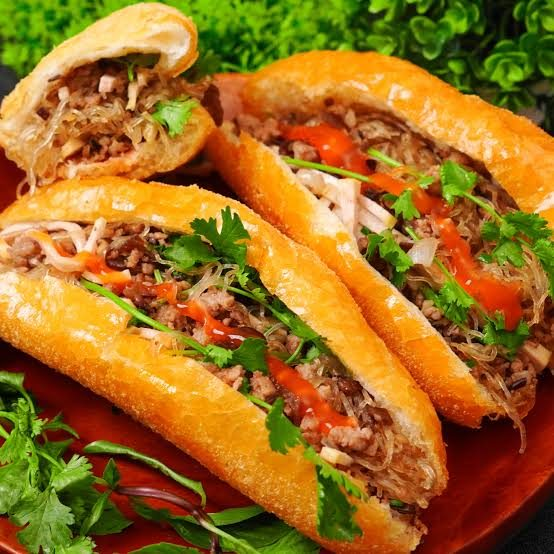
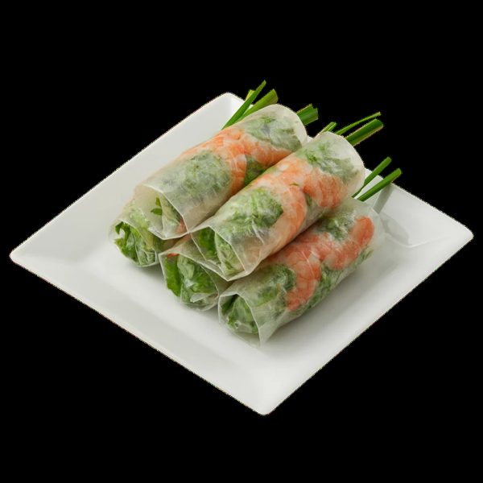

Top Three Dishes
- Pho
- Banh mi
- Goi cuon (spring rolls)
Dish Gallery
Pho

Pho is a noodle soup with beef.
Banh mi

Banh mi is a crispy bread filled with meat, pickles, and herbs.
Goi cuon

Goi cuon are rice paper rolls with shrimp, vegetables, and noodles.
Learn More
Read more on Wikipedia: Vietnamese cuisine.